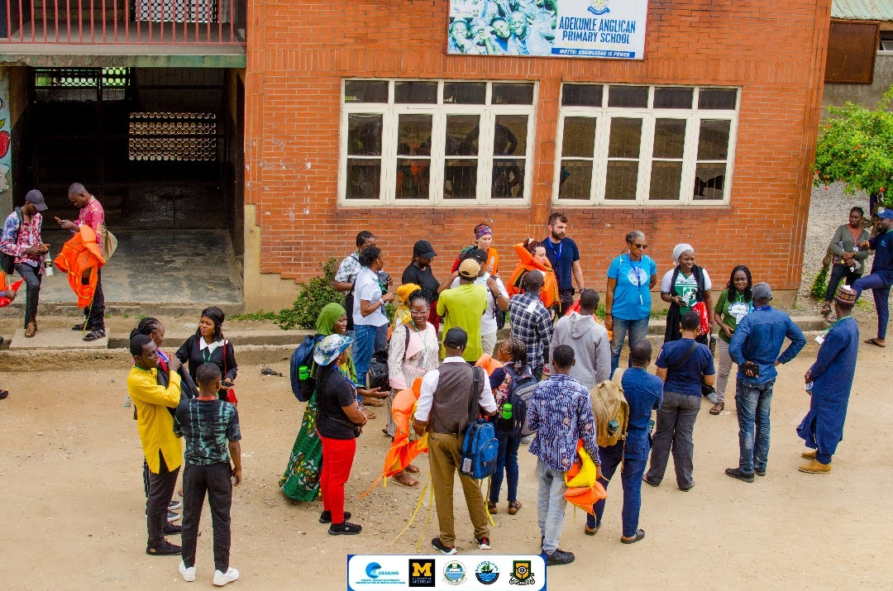
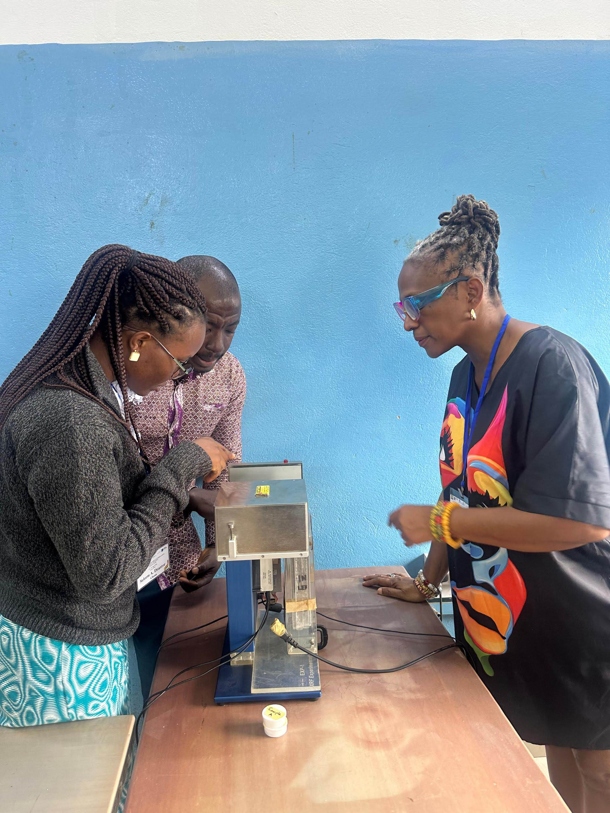

Marine Pollution
Marine Pollution
Investigating contaminants across coastal ecosystems and translating evidence into mitigation strategies.
Dr. Ngozi Margaret Oguguah is a Fisheries Biologist, Chief Research Officer at the Nigerian Institute for Oceanography and Marine Research, and a science-policy advocate advancing ocean sustainability through interdisciplinary research, innovation, and partnerships.
Renowned for bridging marine science, coastal communities, and policymaking, Dr. Ngozi Oguguah leads global research programs that investigate marine pollution, fisheries sustainability, and the blue economy.
With extensive experience across research, leadership, and policy advisory roles, Dr. Oguguah has delivered high-impact scientific studies, stakeholder dialogues, and strategic frameworks to support sustainable ocean management.
Advancing evidence-based responses to pollution and fisheries pressures.
Shaping policies that connect coastal communities, regulators, and research institutions.
Applying remote sensing, mapping, and community data for actionable marine solutions.
Leading investigations and collaborations in marine pollution, fisheries biology, ocean governance, and science communication.
Investigating contaminants across coastal ecosystems and translating evidence into mitigation strategies.
Mapping waste distribution and developing community-led response frameworks for plastic waste reduction.
Assessing stock health, livelihood impacts, and sustainable harvesting practices for coastal fisheries.
Exploring responsible ocean-based growth pathways that benefit communities and ecosystems.
Supporting collaborative decision-making, marine policy design, and coastal resilience planning.
Translating research into accessible narratives and guidance for policymakers and the public.
Impactful initiatives that combine coastal science, visual storytelling, and community partnerships.

High-resolution coastal surveys visualizing debris pathways and informing local cleanup strategy.
Read More
Multimedia storytelling amplifying frontline voices and scientific insight from coastal communities.
Read MoreDesigning practical pathways for research evidence to influence governance and action.
Read MoreCoastal resilience research combining ecosystem health, stakeholder learning, and sustainable planning.
Read MoreRemote surveys and spatial analysis for rapid assessment of coastal pollution hotspots.
Read MoreCollaborative dialogues that empower fishers, students, and municipal partners with science-led solutions.
Read MoreResearch on the occurrence, distribution, and ecological implications of microplastics in Lagos Lagoon.
Assessment of contamination levels and environmental risks in Nigeria's coastal waters.
Integrating remote sensing, drones, and machine learning for plastic pollution monitoring.
Translating marine science into evidence-based policy for the Global South.
Peer-reviewed journals, policy briefs, and evidence syntheses that support ocean governance and sustainable use.
A structured journey from research evidence to policy implementation and measurable coastal impact.
Rigorous marine studies establish the science base for coastal pollution and fisheries trends.
Data, community voices, and technical assessment produce actionable evidence briefs.
Inclusive workshops and dialogues align priorities across government, industry, and communities.
Practical frameworks guide marine planning, coastal protection, and sustainable resource use.
Partnerships put evidence into action through pilots, trainings, and adaptive governance.
Improved coastal health, resilient fisheries, and stronger science-policy collaboration.
Featured stories, videos, and interviews that highlight ocean science and policy leadership.
Keynotes, invited lectures, and training sessions centered on marine science and coastal governance.
Invited to present visionary ocean sustainability themes at international conferences.
Designing practical training events for policy professionals and coastal resource managers.
Leadership learning sessions that build the next generation of marine science advocates.
A compelling communicator with a global perspective on ocean science, policy, and community-driven action.
Download speaker kitRecognition for leadership in marine research, environmental advocacy, and innovation.
Honored for exceptional contribution to ocean science and leadership.
Selected for a global fellowship in environmental stewardship and policy.
Recognized for promoting equity and excellence in marine research communities.
Awarded for innovation in coastal systems and ocean sustainability research.
Active participant in global ocean science, fisheries, and environmental societies.
Connect with Dr. Oguguah for collaboration, research, or speaking opportunities.
Email: ngozi.oguguah@niomr.gov.ng
LinkedIn: /dr-ngozi-oguguah
ResearchGate: /ngozi-oguguah
ORCID: 0000-0002-1234-5678
Google Scholar: /ngozi-oguguah
GitHub: /ngozi-oguguah
Download vCardI welcome opportunities for research collaboration, keynote speaking, policy engagement, grant partnerships, and student mentorship.
Get in Touch